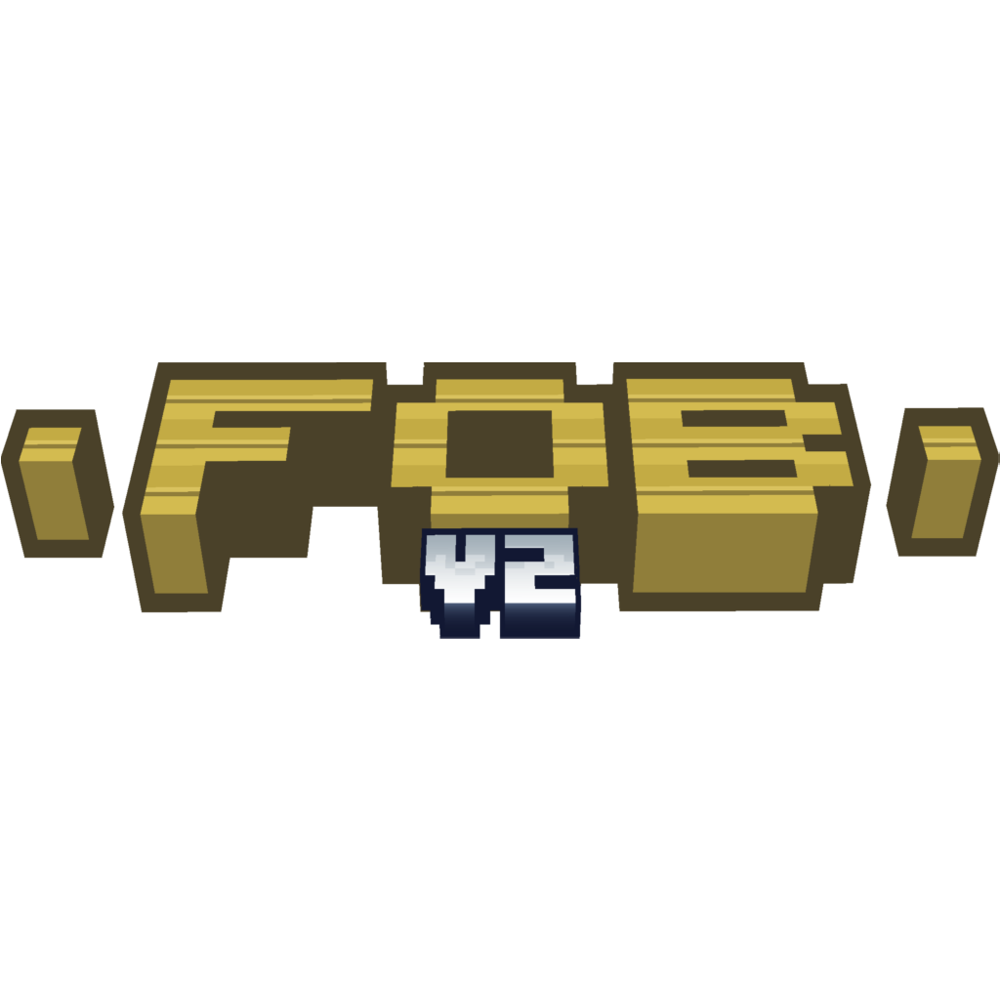
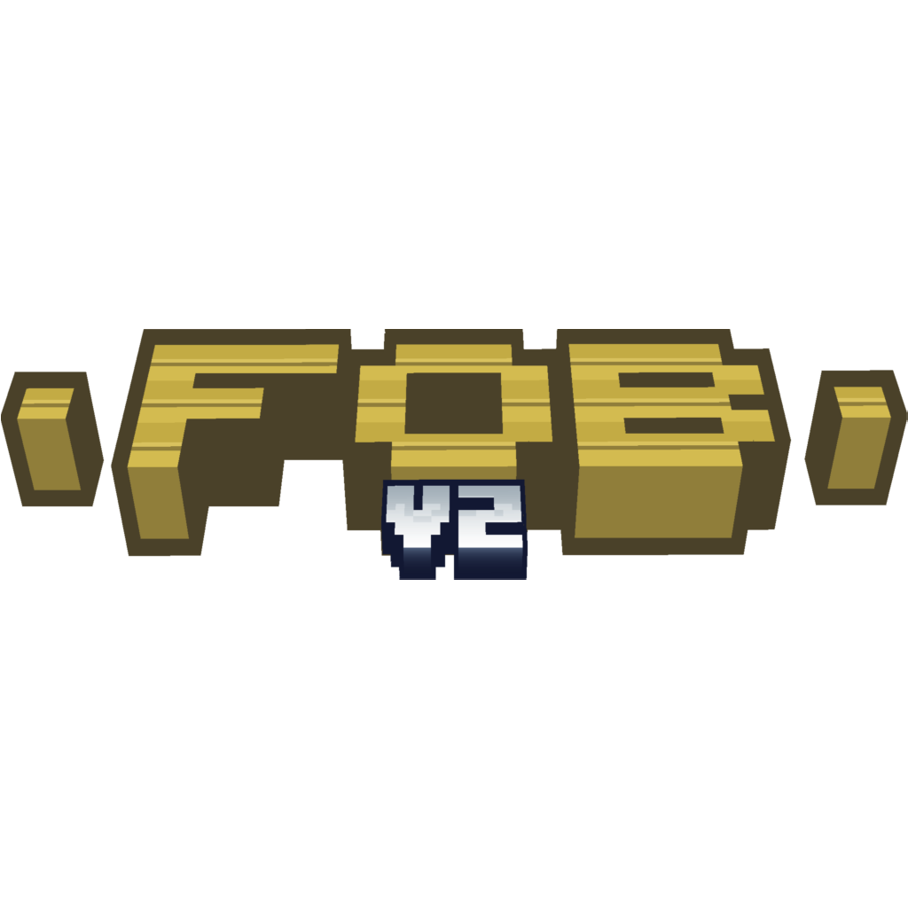
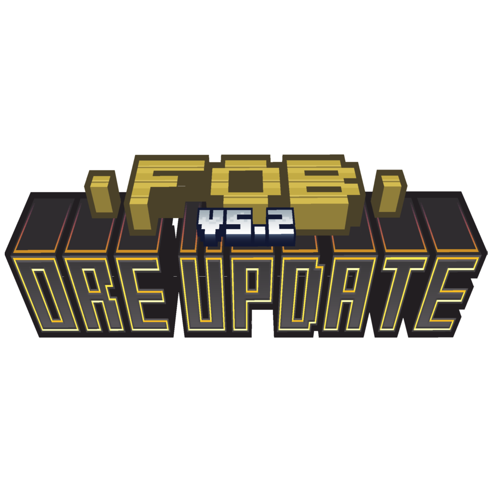
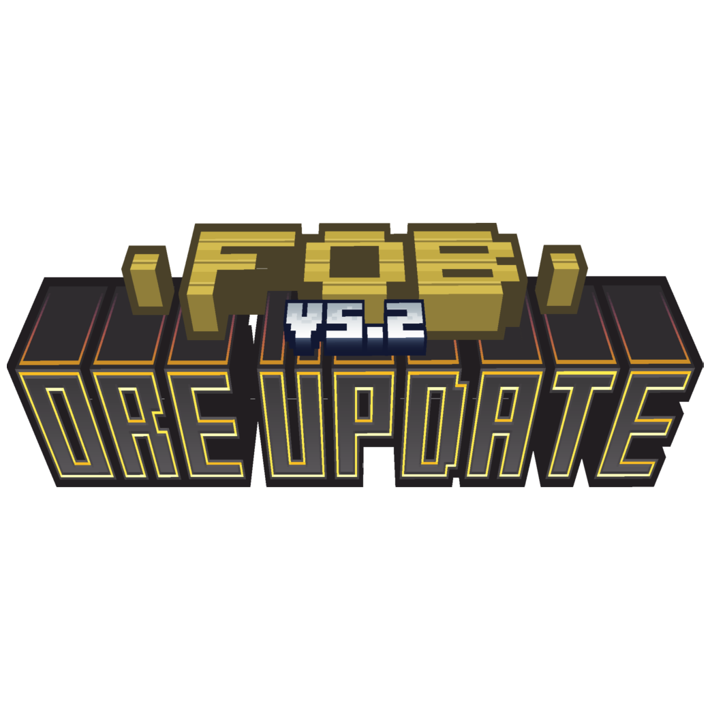

Toutes les infos sur FOB V3 | Fruit Update sont situés juste en dessous
 



 


A propos de FOB V3 - Fruit Update
La Fruit Update, étant la troisième version de FOB, est sortie le 10 Novembre 2021, toujours sous la version 1.16.5 de Minecraft. Cette version, qui comme son nom le dit, ajoute majoritairement des Fruits. Quelques autres aliments sont aussi dans la partie mais ce que l'on voit le plus sont des Fruits. Les Fruits ajoutés sont les suivants: L'Ananas; la Mangue; les Cerises; la Framboise; la Fraise; la Poire; la Pêche; Le Quart de Pomme; le Quart de Poire; le Quart d'Orange et le Quart de Pêche. Mais comme je l'ai dit, il y a pas que des Fruits, nous vous avions aussi introduit l'Œuf au Plat et le Bacon. Mais qui dit Fruit Update dit aussi nouvelles Pommes, donc 9 Pommes font leur arrivées: la Pomme en Saphir; la Pomme en Ruby; la Pomme en Charbon; la Pomme en Fer; la Pomme en Lapis Lazuli; la Pomme en Quartz; la Pomme en Bluestone; la Pomme en Greenstone et la Pomme en Yellowstone. Ah oui, certains minerais vous sont inconnus... Car oui, FOB V3: Fruit Update ajoute aussi l'arrivée de 5 Minerais: le Saphir; le Ruby; la Bluestone; la Greenstone et la Yellowstone. et bien sur, comment faire un Œuf au plat sans Poêl et des Quart de Fruits sans couteau? Car ces deux outils arrivent aussi!